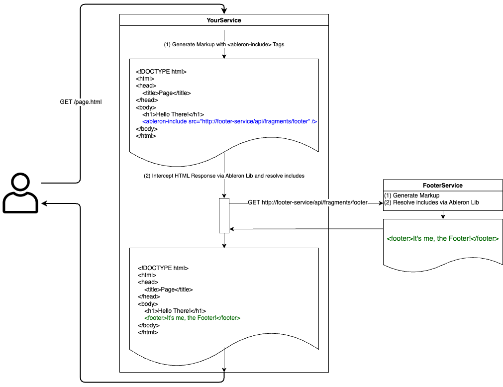

Ableron UI Composition
Server Side. Dynamic. Distributed.
Your way to bring your micro frontends together using distributed server side UI composition.
Server Side - Happens in your services before sending the response to the client.
Dynamic - Composition is performed during runtime of the services instead of compile time. This makes quality assurance a bit harder, but brings significant value regarding decoupling of your teams and services.
Distributed - No centralized infrastructure component which is performing the UI composition. Instead, each service is performing UI composition itself using an Ableron library.
Find me on GitHub - github.com/ableron
How It Works
Ableron intercepts the HTTP response sent by your service and resolves all <ableron-include>-HTML-tags
with their respective remote fragment. This is achieved via installing Ableron as a dependency in your service, which is doing the magic

Why Ableron?
Compared to Server Side Includes via nginx and thus an architecture where a dedicated infrastructure component is performing UI composition:
- Lean Infrastructure: No need to route all your traffic through the infrastructure component which is performing the UI composition
- Easy Local Development: Includes are resolved directly in your service. This works fine for local development and increases developer experience.
- Easy Configuration: Your can easily define different timeouts, fallback fragments or static fallback content for each of your includes.
- Local Caching: All fragments are cached in memory directly within your service according to the cache policy of the fragments. This saves HTTP calls and thus money as well as latency.
How To Use
In order to use Ableron in your service, there needs to be an Ableron library which is compatible with the technology used in your service.
Available framework integrations:
Available basic implementations:
The <ableron-include> Tag
- Must be closed, i.e. either
<ableron-include ... />or<ableron-include ...></ableron-include> - Content between
<ableron-include>and</ableron-include>is used as fallback content - Attributes
id: Unique name of the include used within log messagessrc: URL of the fragment to includesrc-timeout: Timeout for requesting thesrcURL. Defaults to globalrequestTimeoutset via config. Value can either be a plain number (e.g.2000- treated as milliseconds), a number suffixed withms(e.g.2000ms- treated as milliseconds) or a number suffixed withs(e.g.2s- treated as seconds)fallback-src: URL of the fragment to include in case the request tosrcfailedfallback-src-timeout: Timeout for requesting thefallback-srcURL. Defaults to globalrequestTimeoutset via config. Value can either be a plain number (e.g.2000- treated as milliseconds), a number suffixed withms(e.g.2000ms- treated as milliseconds) or a number suffixed withs(e.g.2s- treated as seconds)primary: Denotes a fragment whose response code is set as response code for the page
- Precedence for resolving:
src→fallback-src→ fallback content
Examples:
<ableron-include
id="header"
src="https://example.com/api/fragments/header"
fallback-src="https://cdn.example.com/static/fallback-header">
<header>Static fallback header</header></ableron-include><ableron-include id="header" src="https://example.com/api/fragments/header" src-timeout="2s" />Primary Includes
Treating an include as primary leads to not only include the fragment but also to let the fragment control the HTTP response status code as well as response headers. How primary includes work:
- If
srcreturns success status, this status code is set as response code for the page - If
srcreturns error status,fallback-srcis defined and returns success status, this status code is set as response code for the page - If
srcandfallback-srcreturn error status, the status code returned bysrcis set as response code for the page - If
srcandfallback-srcreturn error status, the fragment content equals the body returned bysrc. Fallback content is ignored
Caching of fragments
Fragments are considered cacheable if they have HTTP status code:
200,203,204,206300404,405,410,414501
Cache Auto Refresh
Cached fragments are being refreshed automatically, if enabled. By default, auto refreshing is disabled.
If auto refresh is enabled, cached fragments are getting asynchronously refreshed before they expire. This reduces the cache miss
rate and thus has a positive impact on latency. On the other hand, additional traffic is introduced, because the cached
fragments are loaded again even before their actual expiration time
Fragments are tried to be refreshed when only 15% of their initial time to live remains. In case of failure, refresh is
repeated three times with a static delay of one second.
The maximum number of consecutive refreshs of inactive cached fragments can be configured. Fragments are considered inactive,
if they have not been read from cache between writing to cache and a refresh attempt.
FAQ
Q: I have added a header to cacheVaryByRequestHeaders, but caching is not influenced. Why?
A: Most probably the header set via cacheVaryByRequestHeaders is not sent along the fragment request.
Also add the header to fragmentRequestHeadersToPass to make sure it is included in the fragment request.
Q: When src or fallback-src of an <ableron-include>-tag return
a redirect, will that redirect be followed?
A: No. Redirects will not be followed when requesting fragments because they may introduce unwanted latency.
Q: Does Ableron influence Cache-Control of my pages?
A: Yes. The transclusion result provides a max-age for the content with all includes resolved, based on the fragment with the lowest expiration time. I.e., the fragment with the lowest expiration time defines the max-age of the page in case max age of the page is not below it.
Contributing
All contributions are greatly appreciated. To contribute you can either simply open an issue or fork the corresponding repository and create a pull request:
- Fork the respective repository
- Create your feature branch:
git checkout -b feature/amazing-feature - Commit your changes:
git commit -m 'Added some amazing feature' - Push to your branch:
git push origin feature/amazing-feature - Open a pull request